In a fishing game the sea fills most of the screen for most of the trip, so it carries a lot: the weather, the mood of a day out, how hard it is to keep your feet on deck and where the fish might be. It has been rebuilt more times than almost anything else in Charter, and the version further down this page runs in your browser on the game’s own wave recipe, with the real ship floating on it, so you can take it from a flat calm to a storm yourself.
Three sine waves
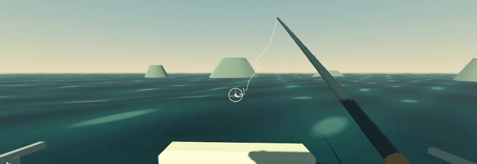
The first sea was three sine waves added together, each rolling in a slightly different direction at its own speed, with the colour painted in bands to give it a low-poly look. For a prototype about casting a line that was enough, but nothing about it suggested weight or weather. Every swell was as tall as the one before, the pattern repeated if you watched it for long, and the boat was simply set on top of it, its height and tilt read from the water at a few points under the hull.
The first rounds of work on it were about appearance. A look study pulled the colour away from bright aquarium teal toward the slate and grey-green of a northern sea under cloud, added layered detail to the surface and broke the foam up along the crests. Then the waves went from three to eight, crossing at different lengths with sharper crests and broader troughs, and the hull was made to heave and pitch harder. It was a real improvement and it still looked smooth and weightless, a little like a sheet being shaken from one edge, because a handful of regular waves can’t make the lumpy, confused surface a real sea has.
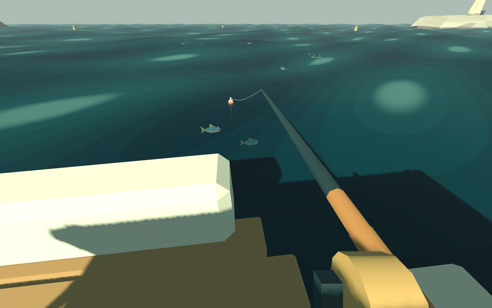
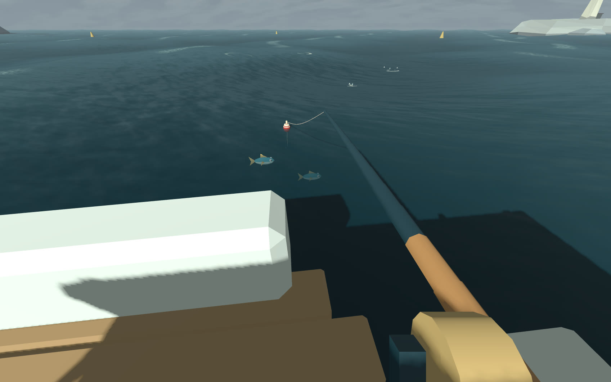
A sea built from a recipe
A real sea is thousands of waves at once. There’s long swell that has travelled from a storm far away, shorter waves raised by the wind overhead and everything in between, and each one moves at the speed its length dictates, so the long ones keep overtaking the short ones and the surface never repeats. Oceanographers measured how that energy is spread across wavelengths during the Joint North Sea Wave Project, and the result, the JONSWAP spectrum, tells you how much of each wavelength to expect for a given wind speed and the distance it has blown across open water. Jerry Tessendorf described how to build film water from a spectrum like this around the turn of the century, and what makes it practical is the fast Fourier transform, which turns the whole recipe into a height map of the surface in one pass instead of adding waves up one at a time.
Charter’s sea is built on GodotOceanWaves, 2Retr0’s open-source ocean for Godot, which does this on the graphics card. The game runs two layers of it: a long swell on a grid 88 metres across, and a shorter wind chop on a 57 metre grid that crosses the swell at an angle. The surface moves sideways as well as up and down, so crests bunch together and sharpen while troughs stretch out flat, the way real ones do. The four sea states, from Calm to Extreme, are recipes for those two layers covering wind speed, wave height, how sharp the crests get and when they start to break, and the weather slides between them continuously.
Loading the ship
Drag the sea state from Calm to Extreme and the recipe changes underneath while the same waves keep running, growing and steepening until the crests start to turn white. If you turn a layer off, the swell on its own is long and orderly, almost hypnotic, and the chop on its own is a busy ripple going nowhere, and it takes the two crossing each other to get the uneven surface of the real thing. The first sea button switches back to the original three sines, ported exactly, which is the quickest way to see what changed. The browser version is cut down from the game’s: it computes a much coarser grid on the processor where the game uses a fine one on the graphics card, so the smallest detail is softer, and it leaves out refraction, reflections and spray.
In the game the weather never swaps one sea for another. When conditions change, the recipe slides from one state to the next while the waves carry on, and the two layers move at different paces: the wind chop builds and dies quickly, while the swell takes longer to arrive and hangs around after the wind has dropped, which is what a real sea does after a blow. Each player’s game builds the sea from the same recipe, seed and clock, so the waves themselves never travel over the network. The whole crew sees the same swell lift the bow at the same moment, and someone who joins in the middle of a storm can rebuild it from the current conditions alone.
Whitecaps and foam that stays
The foam comes out of the same maths. Because the surface moves sideways as well as up, water bunches together at a steep crest, and how hard it’s being squeezed can be measured everywhere at once. Where it’s squeezed past a threshold the crest turns white, and that foam is written into a map that fades over a few seconds, so a breaking crest leaves a patch behind it that drifts and thins out instead of vanishing the moment the wave has passed.
Getting the amount right took several rounds. The first version left contour lines of foam repeating across the whole sea, and turning the foam up to compensate covered large areas in flat white sheets, which looked like snow on a field. What works is keeping fresh foam bright and confined to crests that are actually breaking, then letting what’s left over break up into sparse flecks that erode as they drift. Each sea state has its own point at which crests begin to break, so a calm day has almost none and an extreme sea is streaked with it.
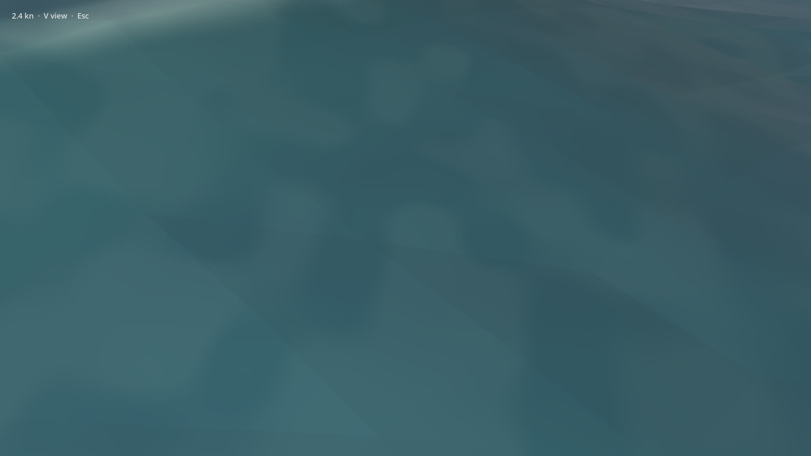
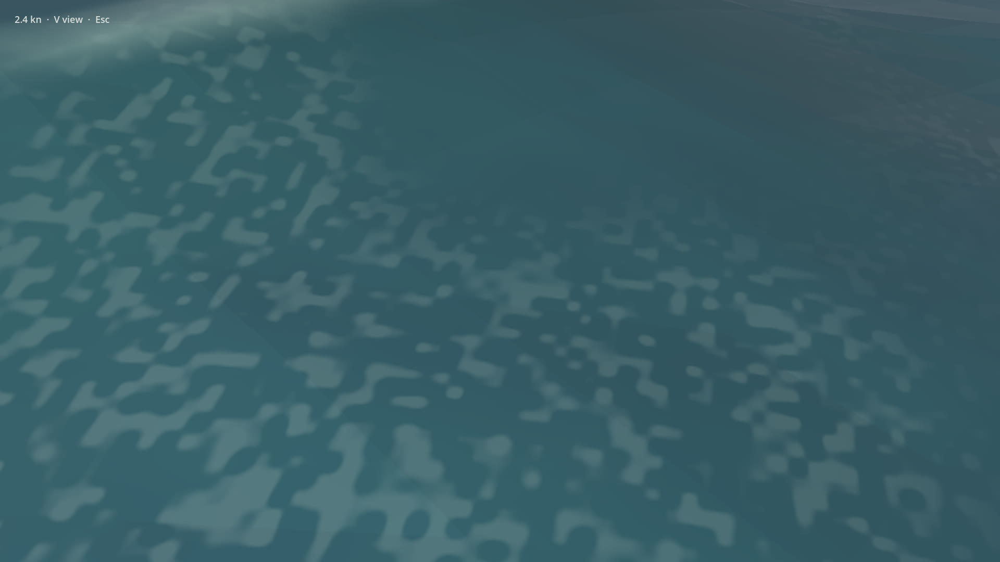
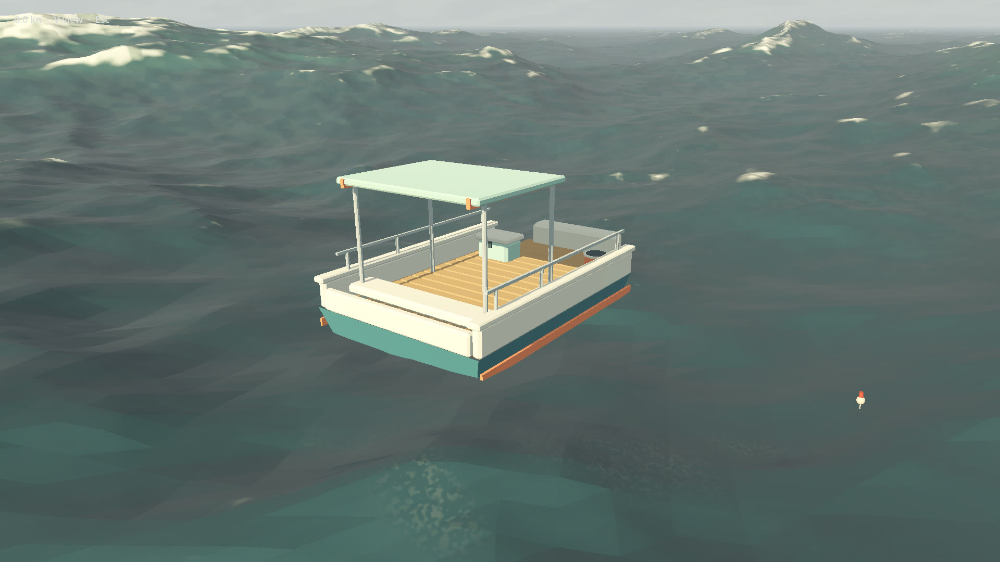
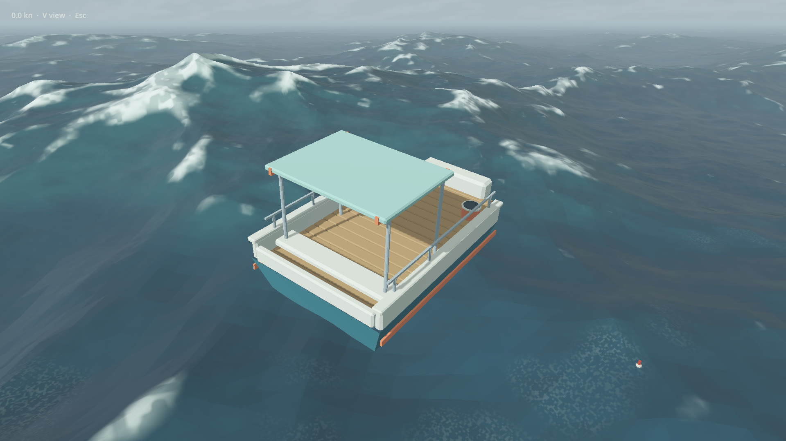
The standalone prototype also turned out to be too fast. Waves of that size in a real sea move with a slow, heavy roll, and the first version raced, so the whole sea was slowed twice before it felt right, and the slower pace is a large part of why it looks heavy now.
Light through the water
A lot of what makes water look like water is the way light gets into it. Look across the sea toward a low sun and the thin top of a wave lets the light through and glows green. The water material looks for crests that are both lifted and being squeezed, and adds that glow only there, so flat water and foam don’t light up with it.
Close to the boat the surface is partly see-through. For every point on the water the shader works out how far light has to travel through the water to reach whatever is beneath it and fades the view with that distance, losing red light first, which is what real water does. A fish under the hull is clearly visible, and the same fish a few metres down is a shadow. Different stretches of coast can use different water, from clear offshore blue to the greener, murkier water of a plankton-rich coast.
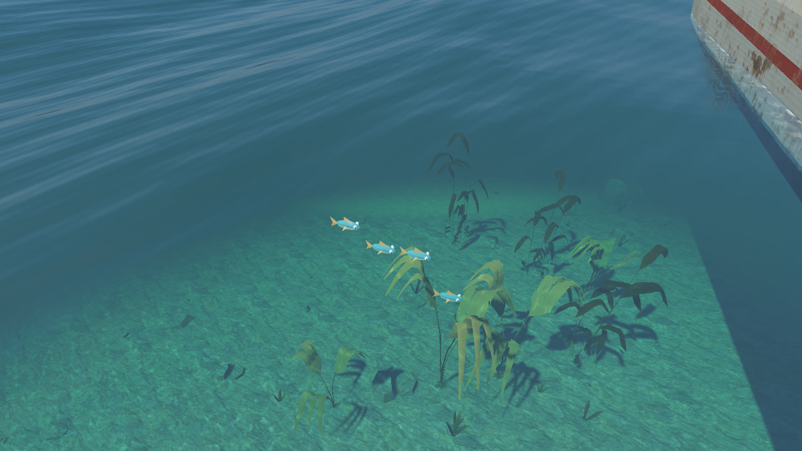
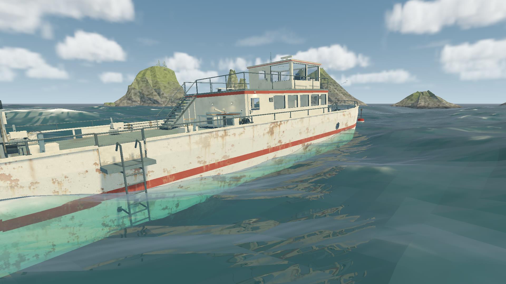
From below, the surface shows the sky only in a circle directly overhead and acts as a mirror everywhere else, which is called Snell’s window, and the underside of the waves is drawn to behave the same way.
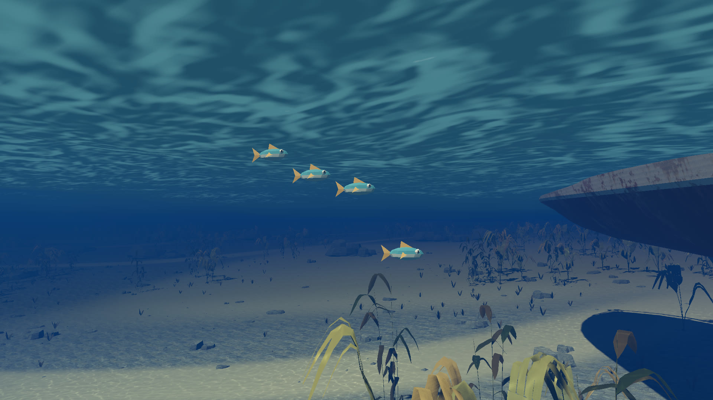
Reflections were the last piece. The water always reflected the sky, but it didn’t reflect the hull or the cliffs, so the ship sat over plain reflected sky. Now each reflected ray looks for the hull or the coast where they’re already drawn on screen and reflects them where it finds them, falling back to the sky everywhere else.
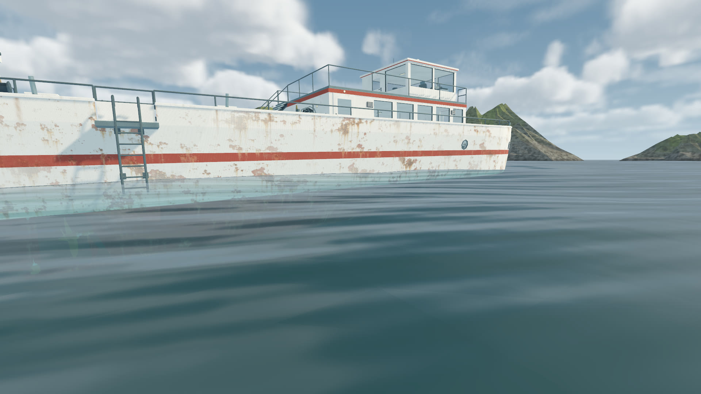
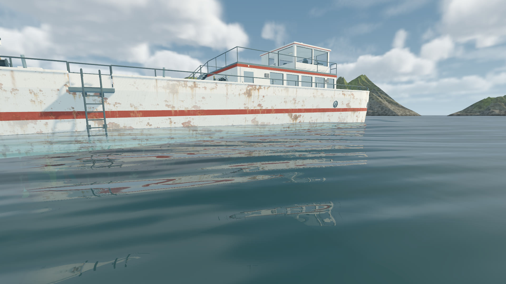
The low-poly look up close is deliberate. The water blends the lighting of the actual triangles into the smooth wave shading, so near the boat you see flat facets catching the light, and the blend fades out with distance before the triangles get small enough to shimmer.
The ship on the same sea
The ship, the float on your line and anyone in the water all take their heights from the waves the graphics card actually draws. With the old ocean the physics used the smooth wave formula while the screen showed a mesh of triangles stretched over it, and the two never quite agreed, so things that touched the water needed patching to sit on what you could see. Reading the drawn surface back keeps the hull, the float and anyone swimming on exactly the water you see.
Next for the water is the length and period of the waves, which are tuned for looks at the moment and will be compared carefully against how the ship handles, and the underwater side of Greywick, which hasn’t had the attention the surface has.